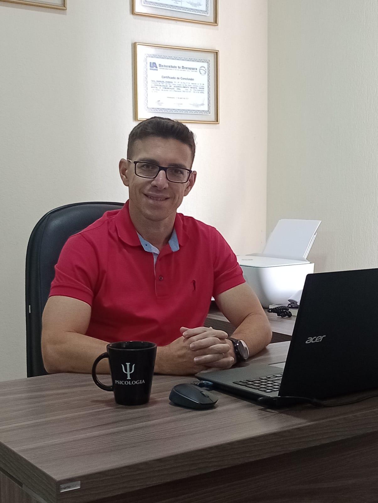

Atendimento Presencial e Online
Você não precisa enfrentar tudo sozinho(a).
Há um caminho. Um espaço seguro e acolhedor para você lidar com a ansiedade, relacionamentos e reencontrar seu equilíbrio emocional.
Agendar Conversa Inicial
A terapia é para
você que...
Identifica-se com algum destes cenários em seu dia a dia.
Sofre com Ansiedade
Sente pensamentos acelerados, esgotamento emocional, preocupação constante e dificuldade para relaxar ou focar no presente.
Dificuldades no Relacionamento
Enfrenta conflitos, falta de comunicação, está passando por um término doloroso ou pelo delicado processo de luto.
Busca Autoconhecimento
Quer entender melhor seus padrões de comportamento, melhorar sua autoestima e construir uma vida mais equilibrada.
Quem é o Fábio?
Psicólogo Clínico — CRP 06/120048
Olá! Sou psicólogo, formado há 12 anos pela Universidade Camilo Castelo Branco (UNICASTELO), e acredito que cada pessoa tem uma história única que merece ser ouvida com respeito, empatia e sem julgamentos.
Ao longo da minha trajetória, que iniciou com uma grande transição de carreira, busquei ampliar minha formação para oferecer um atendimento cada vez mais qualificado e acolhedor.
Possuo especializações em Psico-Oncologia, Saúde Mental e Comunicação Oral, áreas que enriquecem minha prática clínica e permitem um olhar integral sobre cada paciente.
Dúvidas Frequentes
O sigilo é um dos pilares da psicoterapia. Tudo o que é compartilhado durante as sessões é tratado com total confidencialidade, conforme o Código de Ética Profissional do Psicólogo. Isso significa que você pode falar sobre seus sentimentos e pensamentos com segurança, sabendo que sua privacidade será respeitada.
Sim. A terapia online é reconhecida pelo Conselho Federal de Psicologia e tem se mostrado tão eficaz quanto a modalidade presencial. Ela oferece acolhimento, vínculo terapêutico e resultados consistentes, além da praticidade de ser realizada no conforto do seu ambiente.
Não existe um tempo igual para todas as pessoas. A duração do processo depende dos objetivos, da demanda apresentada e do ritmo de cada paciente. Algumas questões podem ser trabalhadas em poucos meses, enquanto outras exigem um acompanhamento mais longo. Tudo é avaliado em conjunto.
Cada sessão tem duração de 50 minutos e acontece uma vez por semana, proporcionando um espaço dedicado exclusivamente a você e ao seu desenvolvimento.